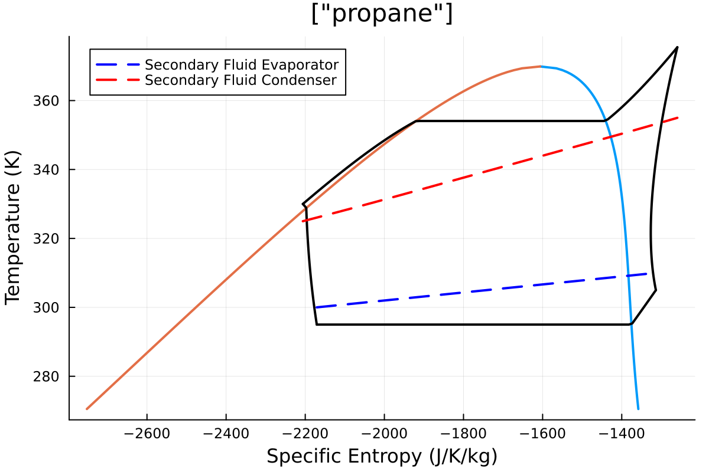

Optimization
Cycle optimization is integrated with Metaheuristics.jl. The goal of the inbuilt optimization is to find optimal superheating and subcooling temperatures for a given cycle.
Here an example of HeatPump is shown.
We set our HeatPump
using Clapeyron, ThermoCycleGlides,Metaheuristics
fluid = cPR("propane",idealmodel = ReidIdeal)
hp = HeatPump(fluid=fluid, z=[1.0], T_evap_in=310, T_evap_out=300.0, T_cond_in=325, T_cond_out=355, η_comp=0.75, pp_evap=5, pp_cond=5, ΔT_sc=5.0, ΔT_sh=5.0)We load the algorithm and its parameters from Metaheuristics.jl:
options = Metaheuristics.Options(f_tol_rel = 1e-2, f_tol = 1e-2,f_calls_limit = 1000,parallel_evaluation = false,verbose = true)
algo = ECA(options = options)We optimize the system
julia> result,hp_optimized = ThermoCycleGlides.optimize(hp,algo,ThermoCycleParameters())+-----------+------------+------------+------------+------------+
| Iteration | Num. Evals | Minimum | Time | Converged |
+-----------+------------+------------+------------+------------+
| 1 | 14 | -3.2777e+00 | 0.1310 s | No |
| 2 | 28 | -3.2777e+00 | 0.2390 s | No |
| 3 | 42 | -3.6478e+00 | 0.3530 s | No |
| 4 | 56 | -3.6478e+00 | 0.4640 s | No |
| 5 | 70 | -3.6715e+00 | 0.5840 s | No |
| 6 | 84 | -4.0781e+00 | 0.7110 s | No |
| 7 | 98 | -4.0781e+00 | 0.8110 s | No |
| 8 | 112 | -4.0781e+00 | 0.9100 s | No |
| 9 | 126 | -4.0781e+00 | 1.0160 s | No |
| 10 | 140 | -4.0917e+00 | 1.1300 s | No |
| 11 | 154 | -4.0917e+00 | 1.2640 s | No |
| 12 | 168 | -4.0998e+00 | 1.3900 s | No |
| 13 | 182 | -4.1010e+00 | 1.5340 s | No |
| 14 | 196 | -4.1019e+00 | 1.6970 s | No |
| 15 | 210 | -4.1019e+00 | 1.8340 s | No |
| 16 | 224 | -4.1268e+00 | 1.9640 s | No |
| 17 | 238 | -4.1268e+00 | 2.1000 s | No |
| 18 | 252 | -4.1273e+00 | 2.2320 s | No |
| 19 | 266 | -4.1273e+00 | 2.3570 s | No |
| 20 | 280 | -4.1373e+00 | 2.4660 s | No |
| 21 | 294 | -4.1373e+00 | 2.5780 s | No |
| 22 | 308 | -4.1391e+00 | 2.6700 s | No |
| 23 | 322 | -4.1396e+00 | 2.7720 s | No |
| 24 | 336 | -4.1396e+00 | 2.8680 s | No |
| 25 | 350 | -4.1406e+00 | 2.9700 s | No |
| 26 | 364 | -4.1406e+00 | 3.0870 s | No |
| 27 | 378 | -4.1406e+00 | 3.1900 s | No |
| 28 | 392 | -4.1407e+00 | 3.2880 s | No |
| 29 | 406 | -4.1408e+00 | 3.3750 s | No |
| 30 | 420 | -4.1408e+00 | 3.4640 s | No |
| 31 | 434 | -4.1408e+00 | 3.5480 s | No |
| 32 | 448 | -4.1408e+00 | 3.6400 s | No |
| 33 | 462 | -4.1408e+00 | 3.7350 s | No |
| 34 | 476 | -4.1409e+00 | 3.8430 s | No |
| 35 | 490 | -4.1409e+00 | 3.9330 s | No |
| 36 | 504 | -4.1409e+00 | 4.0190 s | No |
| 37 | 518 | -4.1409e+00 | 4.0990 s | No |
| 38 | 532 | -4.1409e+00 | 4.1870 s | No |
| 39 | 546 | -4.1409e+00 | 4.2770 s | No |
| 40 | 560 | -4.1409e+00 | 4.3780 s | No |
| 41 | 574 | -4.1409e+00 | 4.4790 s | No |
| 42 | 588 | -4.1409e+00 | 4.5830 s | No |
| 43 | 602 | -4.1409e+00 | 4.6910 s | No |
| 44 | 616 | -4.1409e+00 | 4.7910 s | No |
| 45 | 630 | -4.1409e+00 | 4.9250 s | No |
| 46 | 644 | -4.1409e+00 | 5.0420 s | No |
| 47 | 658 | -4.1409e+00 | 5.1370 s | No |
| 48 | 672 | -4.1409e+00 | 5.2410 s | No |
| 49 | 686 | -4.1409e+00 | 5.3260 s | No |
| 50 | 700 | -4.1409e+00 | 5.4270 s | No |
| 51 | 714 | -4.1409e+00 | 5.5190 s | No |
| 52 | 728 | -4.1409e+00 | 5.6230 s | No |
| 53 | 742 | -4.1409e+00 | 5.7060 s | No |
| 54 | 756 | -4.1409e+00 | 5.7910 s | No |
| 55 | 770 | -4.1409e+00 | 5.8850 s | No |
| 56 | 784 | -4.1409e+00 | 5.9860 s | No |
| 57 | 798 | -4.1409e+00 | 6.0820 s | No |
| 58 | 812 | -4.1409e+00 | 6.1680 s | No |
| 59 | 826 | -4.1409e+00 | 6.2600 s | No |
| 60 | 840 | -4.1409e+00 | 6.3610 s | No |
| 61 | 854 | -4.1409e+00 | 6.4660 s | No |
| 62 | 868 | -4.1409e+00 | 6.5540 s | No |
| 63 | 882 | -4.1409e+00 | 6.6350 s | No |
| 64 | 896 | -4.1409e+00 | 6.7290 s | No |
| 65 | 910 | -4.1409e+00 | 6.8210 s | No |
| 66 | 924 | -4.1409e+00 | 6.9100 s | Yes |
(Optimization Result
===================
Iteration: 66
Minimum: -4.14088
Minimizer: [10.0, 24.0863]
Function calls: 924
Total time: 6.9100 s
Stop reason: Due to Convergence Termination criterion.To plot the cycle we do as before but now the optimized cycle is already returned by the optimize function - hp_optimized
Note: This is a metaheuristic method hence the converged answer for the user for this case can slighty be different based on number of function calls , time, solution etc ..
sol = solve(hp_optimized,ThermoCycleParameters());
plot(hp_optimized,sol,N = 100)The HeatPump cycle before optimization had a COP of -3.23

After optimization of superheating and subcooling temperatures the COP is -4.14 